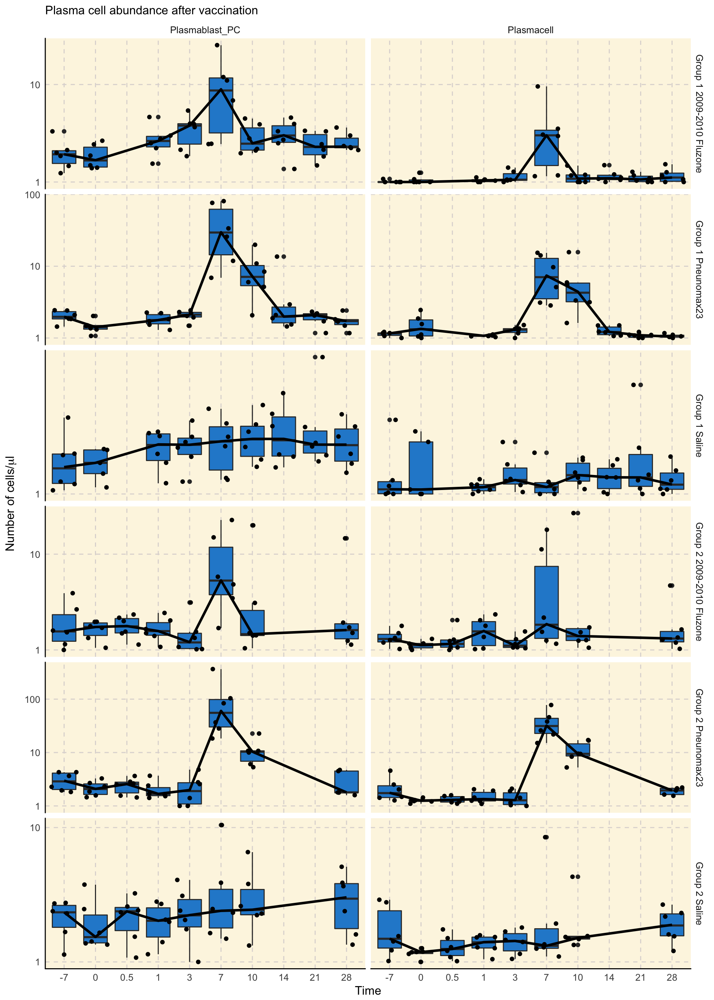

vignettes/report_SDY180.Rmd
report_SDY180.RmdImmuneSpaceR code produces consistent results, regardless of whether it is being executed from a module or a UI based report on the server or on a local machine. This vignette reproduces a report available on the ImmuneSpace portal using the same code.
This report investigate the abundance of plasmablast (and other B cell subsets) over time after vaccination with Pneumovax, Fluzone, or no vaccination (saline control group).
It can be seen on the three figures below that the plasmablast subset peaks at day 7 in both vaccine groups, with a stronger and more durable response with Pneumovax.
As expected, there is no clear peak in the saline group. These results are similar to those reported in Figure 6B of Obermoser et al. (2013) published as part of the original study.
ggplot(dt_fcs19, aes(x = as.factor(study_time_collected), y = as.double(population_cell_number) + 1)) +
geom_boxplot() +
geom_jitter() +
scale_y_log10() +
facet_grid(cohort~population_name_reported, scale = "free") +
xlab("Time") +
ylab(expression(paste("Number of cells/", mu, "l"))) +
geom_line(data = dt_fcs19_median, aes(x = as.factor(study_time_collected), y = as.double(median_cell_reported),
group = 1), color = "black", size = 1.2) +
labs(title = "Plasma cell abundance after vaccination") +
theme_IS()